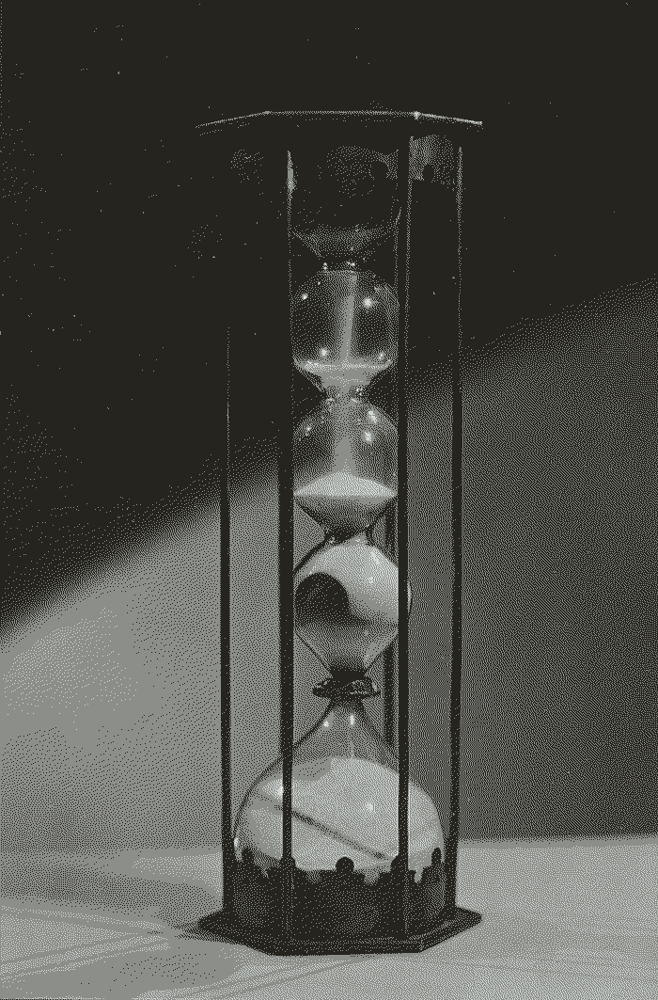

It was a Sunday in September. There would only be four.
Ali Smith
Modern society rests on the discipline of timekeeping. If you aren't following the time of the clock it will not be possible for you to partake, you will miss everything. Yet, I wonder what we are missing with our minds constantly framed in dates and minutes. When writing this we are currently between Rikka, when birds and frogs start singing the songs of summer, and Shōman, when the plants bloom and the wheat ripens, at least according to the small seasons of Japan. It is morning but the sun is already high in the sky. The swifts should be arriving any day now, after their long flight from Africa, they'll nest in the eaves of our apartment building. They're somehow always on time, as if they knew our wedding day.
It is estimated that humans started using something akin to clocks 5000-6000 years ago with the purpose of organising time more efficiently, most likely related to formal religions and certain social and societal activities. Modern clock time is globally coordinated across time zones whose main origin is the industrial revolution which brought factories and high-speed transportation that required accurate timekeeping. Similarly to the loss of wholeness of space and matter when only considering atoms, something is lost of the wholeness and flow of time when considering seconds. There is undoubtedly a usefulness in timekeeping but one must ask if this usefulness hasn't peaked way before we started to wake up, not with the sun, but with the oscillations of quartz crystals or going to sleep with the resonance of cesium atoms.
Outgoing connections: